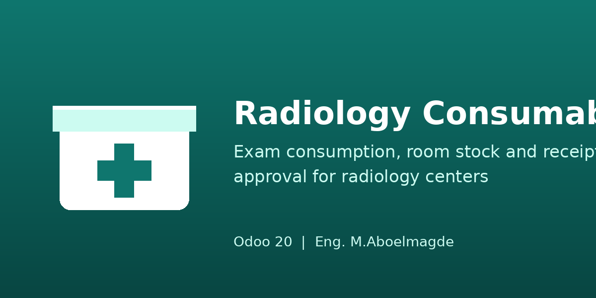
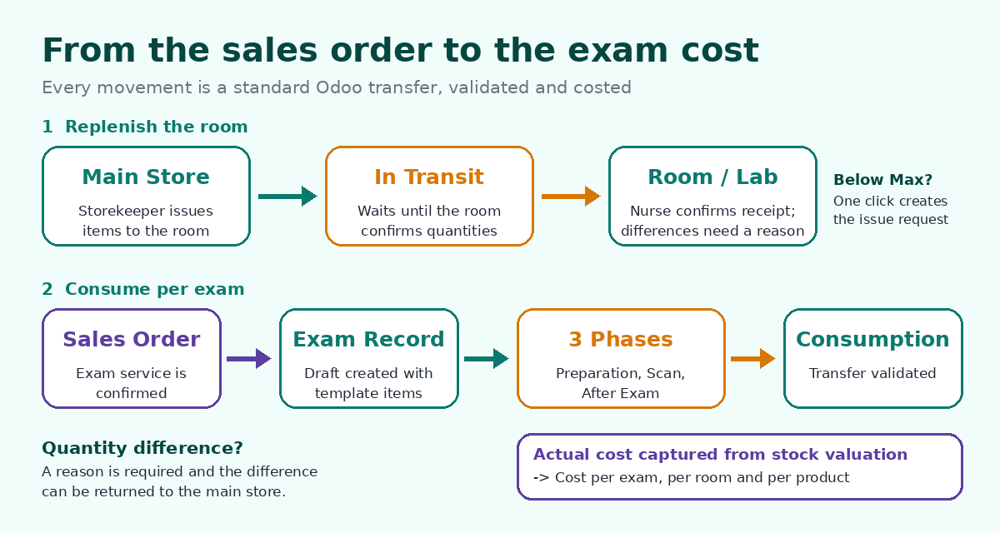
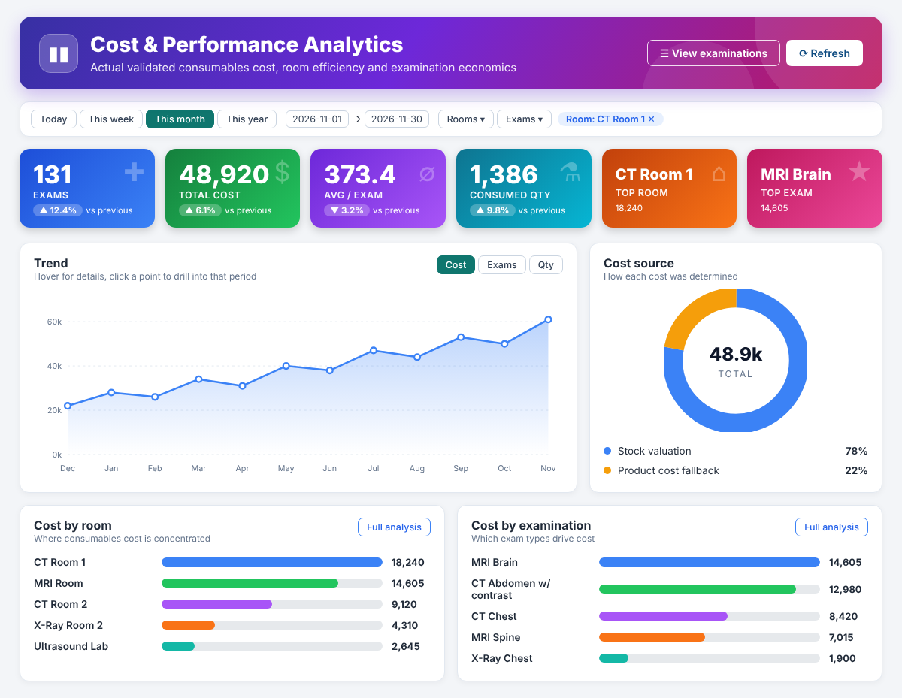
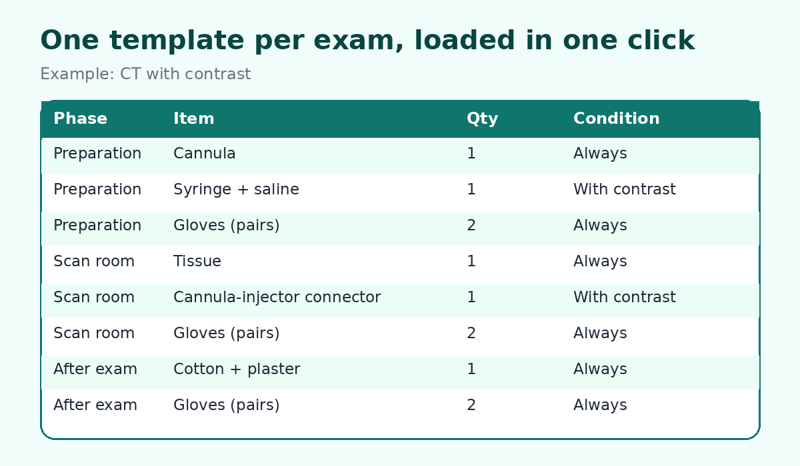
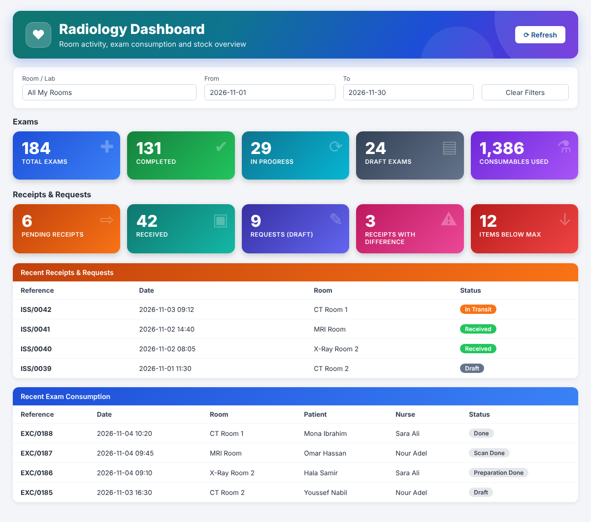
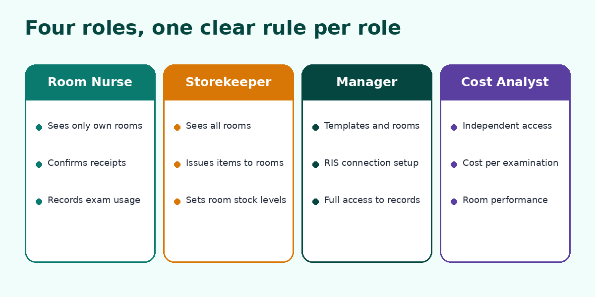

Radiology Consumables & Room Management
From the central store to the radiology room, down to the cost of every single exam.
A dedicated solution for radiology centers and hospitals using Odoo. Control room-level stock, confirm every delivery, create exam consumption straight from sales orders, and see the actual consumables cost per exam, per room and per product — all on standard Odoo Inventory.
USD 199 One-time purchase · Odoo 20 · Community & Enterprise
Why Radiology Consumables?
Radiology departments use a wide range of consumables across CT, MRI, X-ray and other services. Without a structured process it is hard to know what each exam consumes, what each room holds, where losses happen, and what it all costs. This module answers those four questions in one connected workflow.
Know the real cost of every exam
Actual cost is captured from validated stock transfers and analysed per exam, per room and per product.
Control stock by room
Each room or lab has its own internal location, assigned staff and a Max level per product.
Verify every delivery
Issued quantities stay in transit until the receiving room confirms what was actually received.
Make losses visible
Record discrepancies, damaged items, human errors and extravasation separately from normal consumption.
End-to-End Workflow
Replenish rooms from the main store, create exam records from confirmed sales orders, consume by phase, and get the cost automatically.

Key Features
Exam Consumption Templates
Reusable templates for CT, MRI, X-ray and other services. Products and quantities are defined by phase (Preparation, Scan Room, After Exam) and by condition (always, with contrast, allergy case, gown needed).
Sales Order Integration
Mark a service product as a Radiology Exam with its default room. When the sales order is confirmed, one draft exam record per unit is created with the template items. Cancelling the order cancels the draft records.
Pay from the Sales Order
A Register Payment button on the sales order creates and posts the invoice when needed, then opens Odoo's standard payment wizard. The payment is reconciled with the invoice automatically.
Auto Deliver & Invoice
Tick one option on the warehouse and confirming a sales order validates its delivery (if any), then creates and posts the customer invoice. If a step cannot complete, the order is still confirmed and the reason is logged in its chatter.
Service Product Integration
Maintain exam consumables from the template menu or from a tab on the service product, without duplicating configuration.
Room & Lab Inventory
Dedicated internal locations for each room or lab, with responsible staff and a default supply store. Labs are flagged with an Is Lab option.
Room Stock Levels (Max)
Set a Max per product and room. The module shows what is In Room, On the Way and To Request, and creates the issue request for everything below Max in one click.
Controlled Issue to Rooms
Transfer supplies from the main store to the room using standard Odoo internal transfers, with an In Transit stage.
Room Receipt Confirmation
Room staff confirm received quantities. Differences require a reason and can be returned to the main store.
Phase-by-Phase Stock Deduction
Each exam phase creates a standard internal transfer to the consumption location. The next phase is blocked until the previous transfer is validated. Optional automatic validation per company.
Loss & Exception Tracking
Line types for extravasation, defective items and human error keep exceptional usage separate and visible for accountability.
Lots & Traceability
Select the lot on the exam line. Moves follow standard Odoo stock traceability, with chatter tracking on exams and issues.
Management Dashboard
A colourful, at-a-glance page with a gradient header banner. Exams (total, done, in progress, draft), pending receipts, received issues, requests, differences, low-stock rooms and used quantity, with room and date filters and drill-down.
Expiry Reports
Expired Stock and Expiring Soon lists by room, product and lot, with days to expiry, colour status, pivot by expiry month and a configurable alert window per company (default 60 days).
Printable PDF Reports
Exam Consumption, Room Receipt / Stock Transfer, Consumption Template, Room Stock Levels, Room Stock On Hand and Expiry Report.
Cost & Performance Analytics
A dedicated analytics area for managers and analysts. It counts only transfers that were actually validated in Inventory, so the numbers reflect real consumption — not plans.
Actual cost per exam
Unit cost is taken from stock valuation when available, otherwise from the product cost, and the cost source is shown on every line.
Cost per Examination
Pivot and graph by month and exam type, with cost and consumed quantity.
Room Performance
Compare rooms and labs by cost and quantity across months.
Analytics Dashboard
Exams with validated consumption, total cost, average cost per exam, consumed quantity, top rooms, top exams and the most expensive consumed products, with date filters.

Cost figures are visible only to users in the Cost & Performance Analyst group, which works independently of the nurse and storekeeper roles.
Consumption Template Setup
Configure the standard products and quantities required for each examination, organized by workflow phase and applicable conditions.

Dashboard & Operational Monitoring
The dashboard brings the key indicators together so managers can spot pending receipts, track exam progress and see which rooms need replenishment. Filter by room and date range; every card opens the underlying records. Both dashboards open with a coloured header banner, so you always know which page you are on.

Dashboard images use sample data for illustration.
RIS Connection Settings
Store the connection to your RIS once per company: base URL, authentication (none, API key header, bearer token or basic), SSL and timeout, and the paths for sales orders, invoices and payments. Use Test Connection to verify access and Fetch Samples to preview the data format your RIS returns. Sales orders that carry a RIS reference create exam records marked as coming from RIS.
Note: this version provides the connection settings and testing tools. Automatic pulling of RIS orders is not included; orders can reach Odoo as standard sales orders through your own integration or import.
Security & User Roles

| Role | Main responsibilities |
|---|
| Room Nurse | Receive supplies and record exam consumption for assigned rooms only. |
| Storekeeper | Manage issues, internal transfers, room stock levels and replenishment across all rooms. |
| Manager | Configure rooms, templates and RIS connection; full access to operations. |
| Cost & Performance Analyst | Independent read-only access to cost analytics, without stock or nurse permissions. |
Built on Standard Odoo Inventory
- Uses Odoo internal locations and stock transfers.
- Supports standard stock move processing and inventory traceability, including lots.
- Optional add-on Radiology Consumables - Analytic Accounting charges the journal entry of every exam transfer to the analytic account of the room, for department-level reporting in Odoo's analytic reports.
- Multi-company ready: records and settings are scoped per company.
- Designed for Odoo 20 Community and Enterprise.
- Full Arabic translation included (ar).
Quick Setup
- Install the module; the consumption, loss and in-transit locations are created automatically.
- Create radiology rooms and labs, assign staff and a supply store.
- Assign users to the module security groups.
- Create consumption templates, or configure consumables on the service products and mark them as Radiology Exams.
- Set Max levels per room, issue supplies, confirm receipts and record exam consumption.
- Open Cost & Performance Analytics to review the actual cost.
Technical Information
- Version: 20.0.1.8.0
- License: LGPL-3
- Dependencies: Inventory, Inventory Valuation (stock_account), Expiration Dates (product_expiry), Invoicing, Discuss and Sales
- Python library: requests (used by the RIS connection tools)
- Compatibility: Odoo 20 Community and Enterprise
Support
Developed by Eng. M. Aboelmagde · Odoo Lab.
For technical support, implementation assistance or customization inquiries, please contact the module publisher through the Odoo Apps listing.